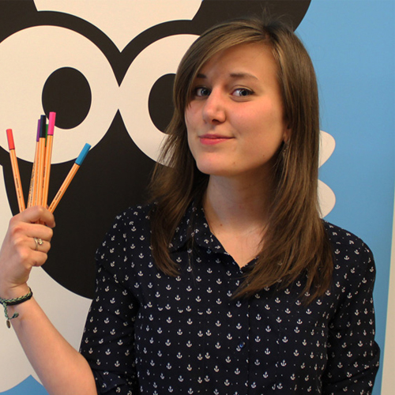

Nauleau Marie
Poste/mission : Webdesigner / Ergonome
Entreprise : Idéveloppement
Lieu : Bordeaux
Contacter l'étudiantPoste/mission : Webdesigner / Ergonome
Entreprise : Idéveloppement
Lieu : Bordeaux
Contacter l'étudiantPrivé
SARL
Idéveloppement est une agence web basée à Bordeaux et Mont de Marsan. Elle réalise des sites et WebApp de A à Z : c’est à dire qu’elle a développé son propre socle (CMS) maison (pas de Wordpress, donc). Gestion de projet, webdesign, intégration, développement back-end sont les prestations d’idéveloppement. L’agence se classe dans le milieu/haut de gamme car elle ne propose que des solutions sur-mesure: aucun template design téléchargé, aucun CMS tout fait, etc.
Du 7 avril au 31 juillet 2015
Il n’y a pas de service. L’agence est composée de 5 salariés.
Durant mon stage, j’ai travaillé sur des missions de design, d’ergonomie et d’intégration. J’ai travaillé sur 8 projets principaux en tant que webdesigner/ergonome et quelques petits projets pour faire des design responsive et/ou de l’intégration.
Le projet le plus important sur lequel j’ai travaillé est “Cours Accès”. Il s’agit d’une WebApp demandée par l’organisme Cours Accès qui propose des suppléments de cours et des cours du soir pour les étudiants en fac de médecine. Ce projet d’envergure rattache les facultés de Bordeaux, Lyon, Grenoble, Montpellier, Toulouse et La Réunion. Ce site est partagé en deux: un côté gestion pour le personnel de la fac (gestion des cours, salles, emplois du temps, paiement en ligne, examens en ligne, corrigés, messages, fiches d’inscription) et un côté étudiant (programme, inscriptions, bulletins, paiement).
Développer les nombreuses fonctionnalités de manière à ce que la gestion soit simple côté administrateur et agréable côté étudiant. Proposer une ergonomie innovante et responsive (mon travail se trouve surtout ici).
Trouver une architecture de l’information simple mais idéale pour les nombreuses pages et fonctionnalités du site. Livrer le site pour la rentrée 2015 (le projet a été lancé en mai 2015). Palier aux validations des nombreux interlocuteurs différents pour ne pas perdre de temps, appréhender.
J’ai eu carte blanche quant à la trame graphique (charte) et à l’ergonomie.
Dans un premier temps j’ai effectué un gros travail de recherche et d’analyse des différents webdesign de “dashboard” présenté par Bootstrap ou des sites comme Behance ou Dribbble pour avoir une idée de disposition des informations. A partir de là, j’ai travaillé sur les wireframes. Depuis les spécifications techniques (cahier des charges de 80 pages, arborescence complète pour les deux parties du site) j’ai travaillé sur environ 115 mockups différents. Une fois ceux-ci réalisés et validés, j’ai pu m’attaquer au webdesign. Je n’ai évidemment pas faire toutes les pages mais seulement une quinzaine de maquettes sur lesquelles on retrouve tous les blocs et fonctionnalités possibles sur l’ensemble de l’application.
Voir la réalisationLe site n’est actuellement pas en ligne. L’agence a pris du retard sur les délais de livraison (le projet s’élève actuellement à 841,5 heures). En revanche, le design a été validé et apprécié par l’ensemble des interlocuteurs. L’intégration complète a été faite fin juillet sans rencontrer de soucis particulier.
La navigation est fluide et la manière dont a été pensé le design a permis à l’équipe, même pendant mon absence, de créer de nouveaux éléments à partir des maquettes. En étant flexible, les boutons, champs de formulaire, etc., ont pu être déplacé ou remplacé aisément.
Le client est très satisfait de l’apparence de Cours Accès. Nous avons livré la WebApp en 3 parties : une première mi-juillet, une seconde fin août et la dernière arrivera fin septembre. Le client finit actuellement de tester l’application et il n’y a aucun retour négatif concernant le webdesign ou l’ergonomie.
J’ai travaillé de concert avec mon chef de projet pour l’ergonomie et l’architecture de l’information. L’équipe m’a ensuite fait confiance pour le design et j’ai eu beaucoup de retours positifs de la part de tout le monde.
Même si, avec du recul, je vois de nombreux défauts dans certains éléments de l’interface, je suis globalement satisfaite du résultat final. C’est un travail qui m’a demandé beaucoup d’heures (135,5 heures de design) j’ai donc appris énormément en travaillant sur une interface d’une telle ampleur.
Il est essentiel d’échanger avec les différents membres de l’équipe pour avoir une vision globale du projet. Sans l’avis des développeurs, intégrateurs et de mon chef de projet, je serai passée à côté de beaucoup d’éléments. Bien sûr, le travail de recherche en amont a été bénéfique, mais chaque projet est unique et on peut facilement oublier certains aspects (surtout techniques).
Si je revenais au tout début du projet Cours Accès, je demanderais à mon chef de projet de prévoir des réunions d’équipe complète pour travailler l’UX Design tous ensemble. Il y a beaucoup trop d’éléments différents à prendre en compte pour prévoir des wireframes seule. Échanger au fil de l’eau sur les fonctionnalités pour savoir comment les maquetter ou les placer nous a fait perdre beaucoup de temps.
Faire le parallèle avec des projets similaires est une bonne base pour tester différentes architectures de l’information. Appréhender les interrogations du client, ainsi que certains aspects non prévus dans les spécifications techniques. Réfléchir au-delà du projet pour proposer un design aisément adaptable dans le futur.
{kind=link}